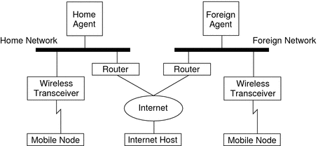

|
|||
|
1. Solaris TCPIP Protocol Suite (Overview) 2. Planning an IPv4 Addressing Scheme (Tasks 3. Planning an IPv6 Addressing Scheme (Overview) 4. Planning an IPv6 Network (Tasks) 5. Configuring TCP/IP Network Services and IPv4 Addressing (Tasks) 6. Administering Network Interfaces (Tasks) 7. Enabling IPv6 on a Network (Tasks) 8. Administering a TCP/IP Network (Tasks) 9. Troubleshooting Network Problems (Tasks) 10. TCP/IP and IPv4 in Depth (Reference) 12. About Solaris DHCP (Overview) 13. Planning for DHCP Service (Tasks) 14. Configuring the DHCP Service (Tasks) 15. Administering DHCP (Tasks) 16. Configuring and Administering DHCP Clients 17. Troubleshooting DHCP (Reference) 18. DHCP Commands and Files (Reference) 19. IP Security Architecture (Overview) 21. IP Security Architecture (Reference) 22. Internet Key Exchange (Overview) 24. Internet Key Exchange (Reference) 25. Solaris IP Filter (Overview) Mobile IP With Reverse Tunneling Routing Datagrams to and From Mobile Nodes Security Considerations for Mobile IP 28. Administering Mobile IP (Tasks) 29. Mobile IP Files and Commands (Reference) 30. Introducing IPMP (Overview) 31. Administering IPMP (Tasks) Part VI IP Quality of Service (IPQoS) 32. Introducing IPQoS (Overview) 33. Planning for an IPQoS-Enabled Network (Tasks) 34. Creating the IPQoS Configuration File (Tasks) 35. Starting and Maintaining IPQoS (Tasks) 36. Using Flow Accounting and Statistics Gathering (Tasks) |
Introduction to Mobile IPCurrent versions of the Internet Protocol (IP) assume that the point at which a computer attaches to the Internet or a network is fixed. IP also assumes that the IP address of the computer identifies the network to which the computer is attached. Datagrams that are sent to a computer are based on the location information that is contained in the IP address. Many Internet Protocols require that a node's IP address remain unchanged. If any of these protocols are active on a Mobile IP computing device, their applications fail. Even HTTP would fail if not for the short-lived nature of its TCP connections. Updating an IP address and refreshing the web page is not a burden. If a mobile computer, or mobile node, moves to a new network while its IP address is unchanged, the mobile node address does not reflect the new point of attachment. Consequently, routing protocols that exist cannot route datagrams to the mobile node correctly. You must reconfigure the mobile node with a different IP address that represents the new location. Assigning a different IP address is cumbersome. Thus, under the current Internet Protocol, if the mobile node moves without changing its address, it loses routing. If the mobile node does change its address, it loses connections. Mobile IP solves this problem by allowing the mobile node to use two IP addresses. The first address is a fixed home address. The second address is a care-of address that changes at each new point of attachment. Mobile IP enables a computer to roam freely on the Internet. Mobile IP also enables a computer to roam freely on an organization's network while still maintaining the same home address. Consequently, communication activities are not disrupted when the user changes the computer's point of attachment. Instead, the network is updated with the new location of the mobile node. See the Glossary for definitions of terms that are associated with Mobile IP. The following figure illustrates the general Mobile IP topology. Figure 27-1 Mobile IP TopologyBy using this figure's Mobile IP topology, the following scenario shows how a datagram moves from one point to another point within the Mobile IP framework:
Regarding wireless communications, Figure 27-1 depicts the use of wireless transceivers to transmit the datagrams to the mobile node. Also, all datagrams between the Internet host and the mobile node use the home address of the mobile node. The home address is used even when the mobile node is located on the foreign network. The care-of address is used only for communication with mobility agents. The care-of address is invisible to the Internet host. |
||
|